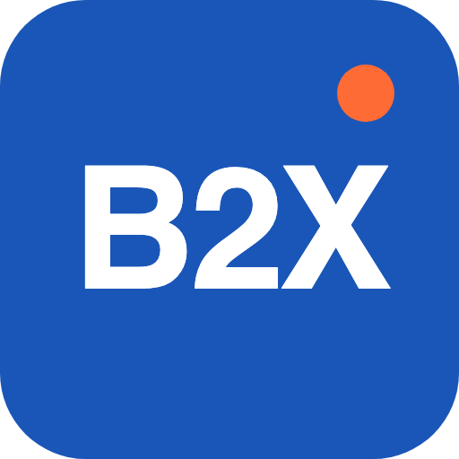

ディスカバリー
業務課題・ゴール・成功指標を整理。必要ならPoCから着手します。

株式会社B2X業務を知るエンジニアが、使い続けられるシステムを作る。
B2Xの受託システム開発／SIは、「作って終わり」のSIではありません。自社プロダクトBeeQuestを自分たちで運営している当社は、要件定義から運用までを業務ドメインごと理解し、"現場で本当に使われるシステム"を作ることにこだわります。会計・教育領域の深い知見と、モダンなクラウドネイティブ技術で、SaaS・業務システム・API基盤を開発します。
"作って終わり"のSIから、"成果を出すSI"へ。B2Xはプロダクト開発会社の視点でシステム開発を進めます。
業務フローが複雑で、自社だけでRFPを書けない。要件定義の伴走が欲しい。
01オンプレ・スクラッチ設計が古く、インフラ・アプリ双方のメンテが重荷に。
02プロダクト開発の経験者採用が進まず、外部パートナーを探している。
03ドメイン知識が浅いベンダーで、業務要件の齟齬が繰り返し発生している。
04自社SaaSを運営し、会計・教育に精通している当社ならではの、統合的な価値提供を行います。
仕訳・決算・税務・研修運用まで、業務の細部を理解した上で要件定義できるエンジニア・コンサルタントが担当します。会計士・税理士資格者が在籍し、業務要件の翻訳精度が高いのが特長です。
01AWS／GCPをベースに、Serverless・コンテナ・マネージドDBを活用。ECS / Lambda / Cloud Run、IaC（Terraform / CDK）で、スケーラブルかつ運用負荷の少ない構成を選定します。
022週間スプリント・レビュー会・レトロスペクティブで、要件変化に強い開発体制。プロダクトオーナー役の伴走も可能です。
03静的解析・脆弱性診断・自動テストをCI/CDに組み込み、リリース品質を担保。SOC 2／ISMSの要件にも対応します。
04原則すべて社内正社員が担当。コミュニケーションコストを抑え、長期的なプロジェクトにも腰を据えて取り組みます。
05リリース後の監視・SRE・改善提案までセットで提供。"作って終わり"を絶対にしません。
06お客さまの課題と段階に応じて、柔軟な関わり方が可能です。
BtoB SaaS、顧客向けWebアプリ、社内ポータル等。設計からリリースまで一貫対応。フロント：React / Next.js / TypeScript、API：NestJS / FastAPI / GraphQL、DB：PostgreSQL / MySQL / DynamoDB。
01経理・販売管理・受発注・生産管理等、業務フローに合わせた独自システム開発。既存システムとの統合、ワークフロー／承認エンジン、帳票／PDF出力／電子化対応。
02社内外システムを繋ぐAPI基盤、マイクロサービス化、イベント駆動アーキテクチャ。OpenAPI仕様設計、API Gateway / Kong / Apollo、メッセージング：Kafka / SQS。
03iOS/Android向けネイティブ・クロスプラットフォーム開発。React Native / Flutter、Swift / Kotlin、Firebase連携。
04DWH構築、BI接続、学習データ／業務データの統合分析基盤。BigQuery / Snowflake / Redshift、dbt / Airflow、Looker / Metabase。
05監視・障害対応・パフォーマンス改善・SLO運用。既存システムの運用継承も可能。Datadog / NewRelic / CloudWatch、インシデント対応フロー設計、SLO / SLA運用。
06| 技術スタック | React / Next.js、TypeScript、Node.js / NestJS、Python / FastAPI、Go、AWS、Google Cloud、Firebase、GraphQL、PostgreSQL、Docker / Kubernetes、Terraform / CDK |
|---|
要件定義から運用まで、一貫した体制で支援します。
業務課題・ゴール・成功指標を整理。必要ならPoCから着手します。
業務フロー・データモデル・UI・非機能要件を確定。
2週間スプリントで継続的デリバリー。CI/CDで品質を担保。
受け入れテスト・本番切替・オペレーション移行を支援。
SRE・機能改善・データ分析による継続的改善を提供。
プロジェクト特性に応じて、請負／準委任／ラボ型から選択可能です。
| 請負お問い合わせ | おすすめ準委任 / スクラムお問い合わせ | ラボ型お問い合わせ | |
|---|---|---|---|
| 概要 | 要件が固まった案件向け。 | 要件が変化する案件向け。 | 中長期でチームを確保したい企業向け。 |
| 契約形態 | スコープ固定 / 一括見積 | 月額・工数ベース | 6ヶ月〜 / 月額固定 |
| 特長 | 成果物ベースの契約／検収・瑕疵担保あり／短期リリース案件に最適 | 2週間スプリント／PO・SM・開発者の柔軟構成／要件の積み上げに強い／共通マーケットレート対応 | 専任チーム編成／知見の内部蓄積／技術選定・内製化支援 |
ご相談いただくことの多い開発テーマと、B2Xの進め方をご紹介します。
要件定義からリリースまで一貫して対応します。Next.js + NestJS + PostgreSQLなどモダンな構成で構築します。
01オンプレミスからAWSへ段階的に移行し、業務を止めずに旧システムを刷新します。
02モノリスをドメイン単位に分割し、API Gateway＋GraphQLで統合。リリース頻度を上げられる体制に移行します。
03| 要件定義から依頼できますか？ | はい、要件定義フェーズ単独でもお受けしております。業務フロー整理・RFP作成支援も可能です。 |
|---|---|
| 契約形態はどのようなものがありますか？ | 請負／準委任／ラボ型の3種類を、プロジェクト特性に応じてご提案します。 |
| 既存システムの運用保守だけでも依頼できますか？ | 可能です。他社開発のシステムでもまずはアセスメントを行い、段階的に引き受けます。 |
| 業種の制限はありますか？ | 特にありませんが、会計・教育・BtoB SaaS領域が得意です。それ以外の領域でも技術軸での支援は可能です。 |
| オフショアは使いますか？ | 原則国内正社員中心の体制です。必要に応じて一部オフショアパートナーを活用しますが、品質管理は当社が一貫して担います。 |
| NDA締結後、概算見積りは可能ですか？ | もちろん可能です。NDA締結後、1〜2回のヒアリングで概算レンジをご提示します。 |
技術選定の相談、概算見積り、プロジェクト体制のご提案まで、無料で承ります。